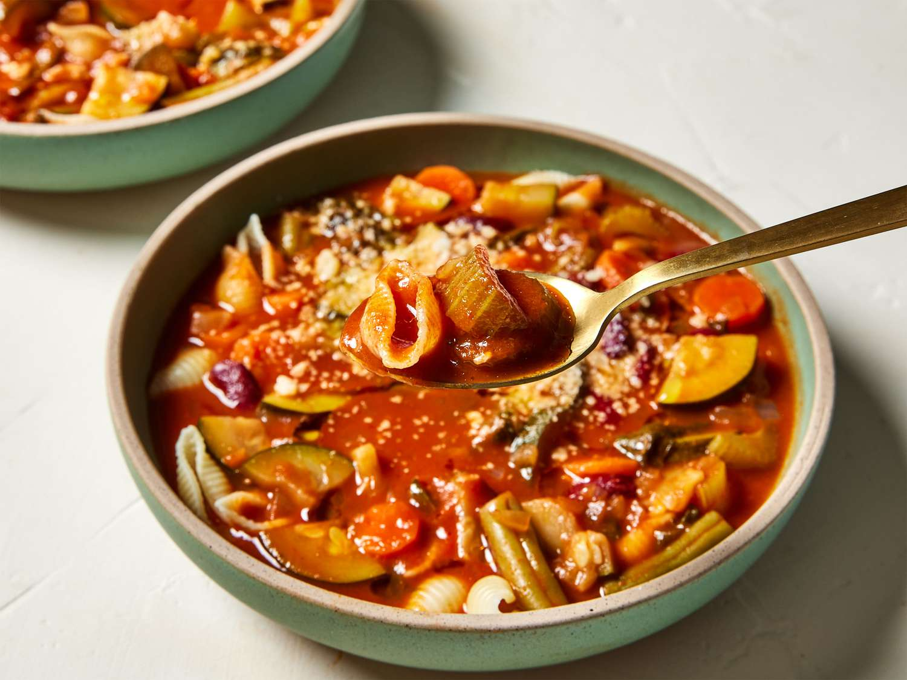

Minestrone Soup

Description
A hearty Italian soup traditionally made with beans, pasta, and lots of vegetables.
This recipe is based off of the delicious, vegetable-rich minestrone served at Sheepherder's Inn
in Sacramento, California. Serve with hearty bread, romaine salad, and a nice merlot.
Ingredients
- 3 tablespoons olive oil
- 3 cloves garlic, chopped
- 2 onions, chopped
- 2 cups chopped celery
- 5 carrots, sliced
- 4 cups tomato sauce
- 2 cups chicken broth
- 2 cups water
- 1/2 cup red wine (Optional)
- 3 zucchinis, quartered and sliced
- 2 cups baby spinach, rinsed
- 2 cups fresh or frozen green beans, cut into 1 1/2-inch pieces
- 1 cup canned kidney beans, drained
- 2 tablespoons chopped fresh basil
- 1 tablespoon chopped fresh oregano
- salt and pepper to taste
- 1/2 cup seashell pasta
- 2 tablespoons grated Parmesan cheese for topping
- 1 tablespoon olive oil
Steps
- Gather the ingredients.
- Heat olive oil in a large stockpot over medium-low heat.
Sauté garlic in hot oil until fragrant, 2 to 3 minutes.
Add onion; cook and stir until translucent, 4 to 5 minutes.
- Add celery and carrots; sauté for 1 to 2 minutes.
-
Pour in tomato sauce, broth, and water; bring to a boil,
stirring frequently. Add red wine; reduce heat to low.
-
Stir in zucchinis, spinach, green beans, kidney beans, basil,
oregano, salt, and pepper. Simmer until soup is heated through, 30 to 40 minutes.
-
Meanwhile, fill a medium saucepan with water and bring to a boil.
Cook seashell pasta in boiling water, stirring occasionally,
until tender yet firm to the bite, 7 to 8 minutes. Drain and set aside.
- Place 2 tablespoons cooked pasta into individual serving bowls.
Ladle soup over pasta and sprinkle with Parmesan cheese.
- Drizzle with olive oil to serve.